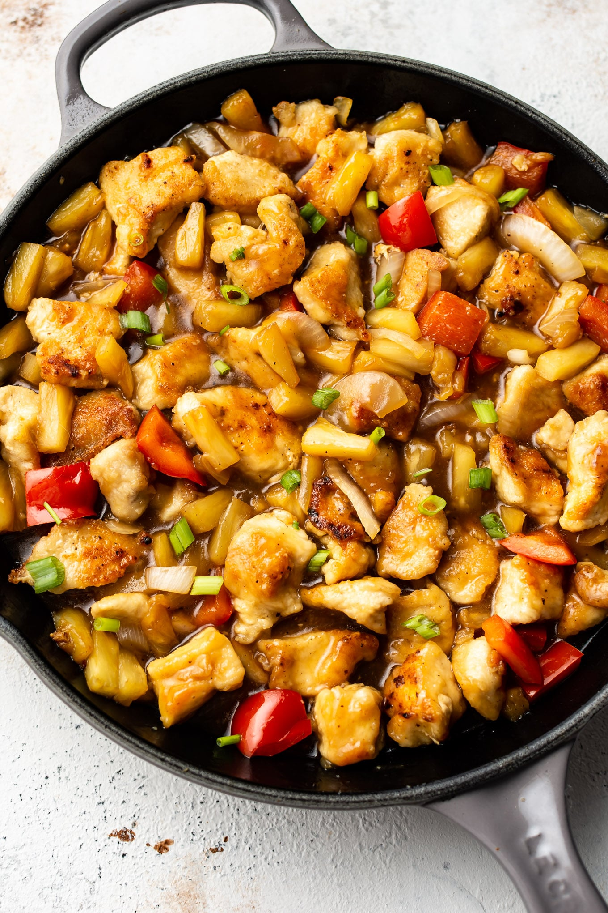

Chicken and Pineapple

Description
Baked chicken with pineapple and yellow rice!
Ingredients
- 6 skinless, boneless chicken breast halves
- 1 pinch poultry seasoning (such as McCormick®)
- 1 pinch salt and ground black pepper
- 1 ½ cups water
- 2 cups yellow rice mix
- 1 teaspoon soy sauce
- 2 (15 ounce) cans pineapple chunks, undrained
Steps
-
Preheat oven to 350 degrees F (175 degrees C). Season chicken breasts
with poultry seasoning, salt, and black pepper.
-
Combine water, yellow rice mix, and soy sauce in a baking dish.
Arrange chicken over rice and pour pineapples and juice over chicken.
-
Bake in the preheated oven until chicken breasts are no longer pink in the
center and rice is tender, about 45 minutes. An instant-read thermometer
inserted into the center of the chicken should read at least 165 degrees F
(74 degrees C).